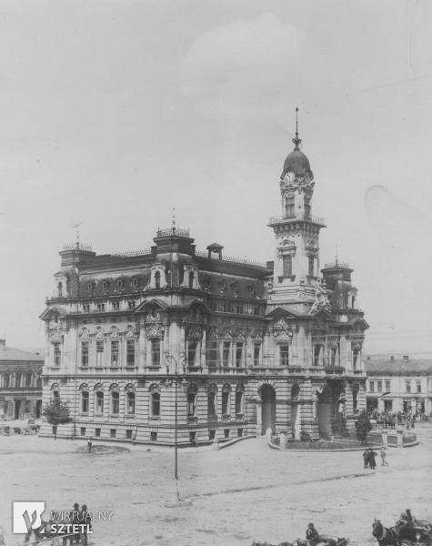

 Początki Nowego Sącza sięgają XIII w, kiedy to na terenie obecnego miasta istniała wieś Kamienica. Ok. 1280 r. stała się ona własnością biskupa krakowskiego, Pawła z Przemankowa. W 1292 r. dzięki jego staraniom, na mocy przywileju wydanego przez króla Wacława II Czeskiego, wieś przekształcono w miasto – jedyne miasto na ziemiach polskich, powstałe za panowania tego władcy. Lokacji dokonano na prawie niemieckim, zaś nazwa została wzięta od sąsiedniego grodu o starszym rodowodzie – Starego Sącza. Nazwy w brzmieniu „Nowy Sandacz” używano już od ok. 1329, zaś dzisiejsza forma utrwaliła się pod koniec XVIII wieku. Od początku istniał ścisły związek pomiędzy obiema miejscowościami. Urząd wójta sprawowali synowie wójta starosądeckiego Tylmana. Pierwsi osadnicy pochodzili ze Starego Sącza, a tamtejsze klaryski wybudowały w nowym mieście swój klasztor. Sącz uzyskał przywilej organizowania dorocznego tygodniowego jarmarku na św. Małgorzatę (tj. 13 lipca), bicia własnej monety, poboru ceł, prawo miecza oraz monopol na produkcję i wyszynk piwa w okolicy.
W XIV i XV w. miasto przeżywało rozkwit i stanowiło ważny ośrodek życia gospodarczego i kulturalnego na ziemiach polskich. Dzięki korzystnemu położeniu przy ważnym szlaku łączącym Polskę z Węgrami stało się ważnym ośrodkiem produkcji rzemieślniczej i wymiany handlowej. Usytuowane było na tzw. szlaku bursztynowym praz przy szlaku koszycko-krakowskim i drugorzędnych traktach związanych z siecią dróg średniowiecznej Europy. W 1329 r. za panowania Władysława Łokietka Nowy Sącz zawarł z Krakowem układ, na mocy którego handel pomiędzy Krakowem a Węgrami nie mógł odbywać się z pominięciem Nowego Sącza, natomiast kupcy nowosądeccy mogli udawać się do Gdańska wyłącznie przez Kraków.
Dynamiczny rozwój miasta umożliwiały także liczne przywileje nadawane zwłaszcza przez Kazimierza Wielkiego, który wybudował tutaj zamek królewski i otoczył Sącz murami. Gród stał się siedzibą kasztelana i starosty oraz ważną twierdzą w systemie obronnym południowej granicy Polski. O jego randze może świadczyć fakt, że często gościli w nim monarchowie, m. in. Ludwik Węgierski i jego matka Elżbieta Łokietkówna, Kazimierz Wielki, Władysław Jagiełło, książę Witold i Władysław Warneńczyk. Swoich synów kształcił tu, pod okiem Jana Długosza i Kallimacha, Kazimierz Jagiellończyk. Prestiż miasta wzrósł jeszcze po podniesieniu w 1448 r. przez biskupa Zbigniewa Oleśnickiego fary pod wezwaniem św. Małgorzaty do rangi kolegiaty oraz utworzeniu archidiakonatu nowosądeckiego.
Okres prosperity trwał przez cały XVI wiek. W tym czasie gród nad Dunajcem był zaraz po stołecznym Krakowie największym płatnikiem podatków w województwie krakowskim. W okresie reformacji prężnie rozwinęli tu swą działalność arianie. Ich przywódca, Stanisław Farnowski cieszył się dużą popularnością wśród sądeckiej szlachty.
Kres świetności miasta nastąpił w XVII w., kiedy to wyraźnie zmalało jego znaczenie gospodarcze i polityczne. Przyczyniły się do tego klęski żywiołowe i epidemie, a ostateczny upadek nastąpił po „potopie” szwedzkim. Wówczas to wojska Karola Gustawa na krótko zajęły miasto, które zostało wyzwolone przez mieszczan nowosądeckich i oddział dowodzony przez braci Wąsowiczów 13 grudnia 1655 r.
Za czasów saskich próbowano przywrócić świetność Sącza, nadając miastu liczne przywileje ekonomiczne, jednak epidemie, pożar, przemarsze wojsk szwedzkich, saskich i rosyjskich w czasie wojny północnej oraz wojny o sukcesję polską uniemożliwiły spokojny gospodarczy. Kolejne zniszczenia pojawiły się w okresie konfederacji barskiej. Wówczas to spłonął sądecki zamek. W 1770 r., dwa lata przed pierwszym rozbiorem Polski, Austria wcieliła w swe granice południową część Sądecczyzny wraz z Nowym Sączem. W 1772 r. miasto decyzją władz zaborczych stało się siedzibą cyrkułu. Zlikwidowano miejscowe klasztory i skonfiskowano majątki kościelne, które przekazywano sukcesywnie nowo przybyłym kolonistom niemieckim.
W okresie autonomii galicyjskiej (1867–1918) przeprowadzono reformę administracyjną, a Nowy Sącz stał się siedzibą jednego z 74 utworzonych wówczas powiatów. Nastąpiło wyraźne ożywienie ekonomiczne. Zaczął rozwijać się handel oraz przemysł, powstawały reprezentacyjne budynki użyteczności publicznej, miasto rozrastało się. W 1876 r. przy nowo otwartej trasie kolei Tarnowsko-Leluchowskiej wybudowano duże warsztaty kolejowe. W 1884 r. powstał węzeł kolejowy z tzw. koleją tranwersalną (linia Nowy Sącz – Chabówka – Czadca). 17 kwietnia 1894 r. miał miejsce groźny pożar, który zniszczył znaczną część miasta, łącznie ze starym ratuszem i przechowywanymi w nim najcenniejszymi archiwaliami miejskimi, jednak nie zahamowało to dynamicznego rozwoju. Zniszczenia szybko odbudowano, polepszając dodatkowo infrastrukturę miejską. Nowy Sącz stanowił w tym czasie także ważny ośrodek kulturalny. Pod koniec XIX w. działały tu liczne towarzystwa kulturalno-oświatowe, jak Towarzystwo Kasynowe prowadzące chór, bibliotekę oraz teatr amatorski, Towarzystwo Gimnastyczne „Sokół” czy Towarzystwo Turystyczne „Beskid”.
Wybuch I wojny światowej przerwał dalszy rozwój miasta. Co prawda nie doznało ono większych strat materialnych, ale pobyt Rosjan oraz umieszczenie Naczelnego Dowództwa C.K. Armii znacznie obciążyły jego budżet. 13 grudnia 1914 r. gościł tutaj dowódca Legionów Józef Piłsudski. W 1918 r. Nowy Sącz jako jedno z pierwszych miast na ziemiach polskich odzyskał niepodległość. Już 31 października 1918 r. członkowie Polskiej Organizacji Wojskowej obsadzili strategiczne punkty miasta, a 2 listopada 1918 r. przedstawiciele tymczasowych władz złożyli w sali ratuszowej przysięgę na wierność Rzeczypospolitej.
W dwudziestoleciu międzywojennym Nowy Sącz zachował status stolicy powiatu. Przez cały ten okres sukcesywnie rosła liczba mieszkańców i postępowała rozbudowa. W 1939 r. mieszkało w nim prawie 34 tys. osób. Powstało w tym czasie wiele zakładów przemysłowych oraz placówek kulturalno-oświatowych. W 1936 r. otworzono w odnowionym zamku królewskim Muzeum Ziemi Sądeckiej.
Niestety dalszy rozwój Nowego Sącza przerwał wybuch II wojny światowej. Niemcy wkroczyli do miasta 6 września 1939 roku. W czasie okupacji ziemia sądecka była częścią Generalnego Gubernatorstwa z siedzibą w Krakowie, a sam Nowy Sącz stał się siedzibą powiatu. Od samego początku dział aparat terroru na czele którego postawiono Heinricha Hamanna. Szacuje się, że w Nowym Sączu i okolicach wymordowano blisko 1 tys. osób, a do obozów śmierci wywieziono 2,5 tys. mieszkańców miasta. Nie przeszkodziło to jednak w zorganizowaniu sprawnie działającego ruchu oporu. Ze względu na położenie w pobliżu granicy, miasto stało się ważnym punktem kuriersko-przerzutowym. Pierwsze trasy przerzutowe na Słowację i Węgry powstały już w październiku 1939 roku. Prężnie działała też partyzantka Armii Krajowej (AK) w ramach Inspektoratu Nowy Sącz. Liczbę żołnierzy AK w regionie sądeckim historycy szacują na ok. 1 tys. osób. Dużą rolę odegrało także tajne nauczanie prowadzone przez miejscowych nauczycieli. 19 stycznia 1945 r. do miasta wkroczyły oddziały sowieckiego 4. Frontu Ukraińskiego. Wówczas to doszło do potężnej eksplozji materiałów wybuchowych i amunicji zgromadzonych przez Niemców na zamku królewskim.
Po wojnie przystąpiono do odbudowy zniszczeń. Stale wzrastała liczba mieszkańców miasta. Jednak upaństwowienie zakładów przemysłowych oraz likwidacja samodzielności gospodarczej rzemiosła i handlu ograniczała wydatnie rozwój Nowego Sącza. Dopiero pod koniec lat pięćdziesiątych XX w. dzięki tzw. eksperymentowi sądeckiemu, przystąpiono do aktywizacji gospodarczej miasta i regionu. Na szerszą skalę zaczęła rozwijać się turystyka. Procesy te przyspieszyło nadanie Nowemu Sączowi w 1975 r. statusu miasta wojewódzkiego, którym pozostawał do końca 1998 roku. Od 1999 r. jest stolicą powiatu w województwie małopolskim.
Założony w 1292 przez Wacława II, króla czeskiego, na miejscu wsi targowej Kamienica. Zasiedlony przez osadników napływających głównie z Niemiec, szybko się rozwijał. Za panowania Kazimierza Wielkiego miasto otoczono murami i wybudowano zamek. W XIV-XVII w. ośrodek handlu z Węgrami i Czechami, konkurujący z Krakowem.
W XVII w., wskutek najazdu szwedzkiego i licznych klęsk żywiołowych, podupadł. Zajęty przez Austriaków w 1770, jeszcze przed I rozbiorem Polski. Pod zaborami utracił swe dawne znaczenie centrum handlowego, zaczął pełnić rolę ośrodka administracyjnego, będąc początkowo stolicą cyrkułu, następnie powiatu.
W 1876 r. utworzono C.K. Warsztaty Kolejowe, a rok później oddano do użytku sądecki odcinek kolei tarnowsko-leluchowskiej. W 1889 r. Nowy Sącz stał się gminą miejską. Podczas I wojny światowej w 1914 r. miasto zajęli Rosjanie. Wyzwolone zostało w 1918 r.
W 1951 r. Nowy Sącz został uznany za miasto na prawach powiatu. W latach 1975-1998 był stolicą województwa nowosądeckiego.